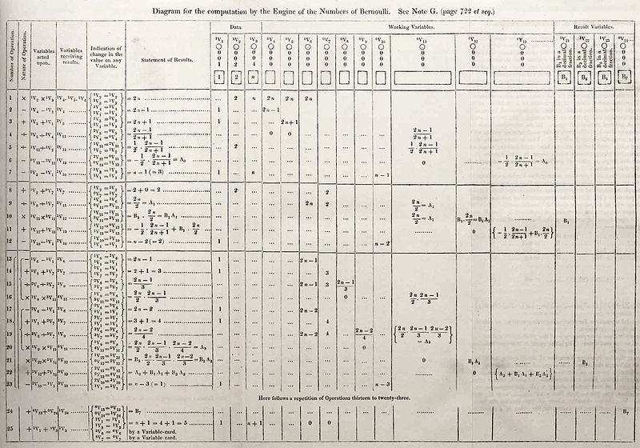

Ada King, condesa de Lovelace (Londres, 10 de diciembre de 1815-íd., 27 de noviembre de 1852),
registrada al nacer como Augusta Ada Byron y conocida habitualmente como Ada Lovelace, fue una matemática,
informática y escritora británica, célebre sobre todo por su trabajo acerca de la calculadora de uso general
de Charles Babbage, la denominada máquina analítica. Entre sus notas sobre la máquina, se encuentra lo que
se reconoce hoy como el primer algoritmo destinado a ser procesado por una máquina, por lo que se la
considera como la primera programadora de ordenadores.
Lovelace fue la única hija legítima del poeta Lord Byron y su esposa Lady Byron.Byron se separó de su
esposa un mes después del nacimiento de Ada y dejó Inglaterra para siempre cuatro meses después. Conmemoró
la despedida en un poema que comienza: "¿Es tu rostro como el de tu madre, mi bella hija! ¡ADA! Hija única
de mi casa y mi corazón".4 Murió en la Guerra de independencia de Grecia cuando Ada tenía ocho años.
Dedujo y previó la capacidad de los ordenadores para ir más allá de los simples cálculos de números,
mientras que otros, incluido el propio Babbage, se centraron únicamente en estas capacidades
Dedujo y previó la capacidad de los ordenadores para ir más allá de los simples cálculos de números,
mientras que otros, incluido el propio Babbage, se centraron únicamente en estas capacidades.
Su madre, Anne Isabella Noel Byron, fue matemática y activista política y social.6 Su padre fue el conocido
poeta George Byron.

Las Notas fueron etiquetadas alfabéticamente de la A a la G. La nota G estaba dedicada a los números de
Bernoulli; en este apartado Ada describe con detalle las operaciones mediante las cuales las tarjetas perforadas
"tejerían" una secuencia de números en la máquina analítica. Este código está considerado como el primer
algoritmo específicamente diseñado para ser ejecutado por un ordenador, aunque nunca fue probado ya que la
máquina nunca llegó a construirse. Pero podemos concluir que la nota G es el algoritmo de Ada, así que a ella se
la reconoce como la primera programadora de la historia,16 la primera persona en describir un lenguaje de
programación de carácter general interpretando las ideas de Babbage, pero reconociéndosele la plena autoría y
originalidad de sus aportes.
Las Notas de Ada se publicaron en la revista Scientific Memoirs en septiembre de 1843, con el título de "Sketch
of the analytical engine invented by Charles Babbage".17 Ella firmó con sus iniciales A. A. L., pero pronto se
supo a quién correspondían. Su condición femenina perjudicó su trabajo y los científicos no se lo tomaron en
serio.15
En sus notas, Ada dice que la «máquina analítica» sólo podía dar información disponible que ya era conocida: vio
claramente que no podía originar conocimiento. Su trabajo fue olvidado por muchos años, atribuyéndole
exclusivamente un papel de transcriptora de las notas de Babbage, cuando en verdad, el trabajo de Lovelace fue,
como relata Plant, "mucho más influyente -y tres veces más extenso- que el texto del que se suponía que era
meramente accesorio".18 Este mismo caracterizó su aporte al llamarla su intérprete; sin embargo recientes
investigaciones muestran la originalidad de su punto de vista sobre las instrucciones necesarias para el
funcionamiento de la «máquina analítica». En efecto, Lovelace "había creado el primer ejemplo de lo que más
tarde se conocería como programación de computadoras"18 y es, por lo tanto, la primera programadora de la
historia de la computación.19
En 1953, aproximadamente cien años después de su muerte, las notas de Ada sobre la máquina analítica de Babbage
fueron publicadas bajo su nombre real, estando ahora reconocida dicha máquina como un modelo temprano de
ordenador y las notas de Ada como una descripción de su software